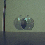
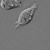
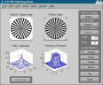

Image Processing Toolbox Demos
Color Segmentation
Color-Based Segmentation Using the L*a*b* Color Space
Color-Based Segmentation Using K-Means Clustering
(This demo requires the Statistics Toolbox.)
Deblurring
Deblurring Images Using the Blind Deconvolution Algorithm
Deblurring Images Using the Lucy-Richardson Algorithm
Deblurring Images Using a Regularized Filter
Deblurring Images Using the Wiener Filter
Enhancement
Contrast Enhancement Techniques
Correcting Nonuniform Illumination
Enhancing Multispectral Color Composite Images
Intensity Adjustment and Histogram Equalization
Landsat Color Composite
Noise Reduction Filtering
Region-of-Interest Processing
Image Analysis
Edge Detection
Quadtree Decomposition
Image Arithmetic

Alpha Blending Streamed Image Pairs
(This demo requires the Image Acquisition Toolbox.)
Image Registration
Finding the Rotation and Scale of a Distorted Image
Registering an Aerial Photo to an Orthophoto
Registering an Image Using Normalized Cross-Correlation
Image Transformation
Creating a Gallery of Transformed Images
Exploring a Conformal Mapping
Extracting Slices from a 3-Dimensional MRI Data Set
Padding and Shearing an Image Simultaneously
Measuring Image Features
Finding the Length of a Pendulum in Motion
Granulometry of Snowflakes
Identifying Round Objects
Measuring Angle of Intersection
Measuring the Radius of a Roll of Tape
Morphological Segmentation

Detecting a Cell Using Image Segmentation
Marker-Controlled Watershed Segmentation
Transforms
Discrete Cosine Transform

2-D Filtering and Filter Design
Reconstructing an Image from Projection Data